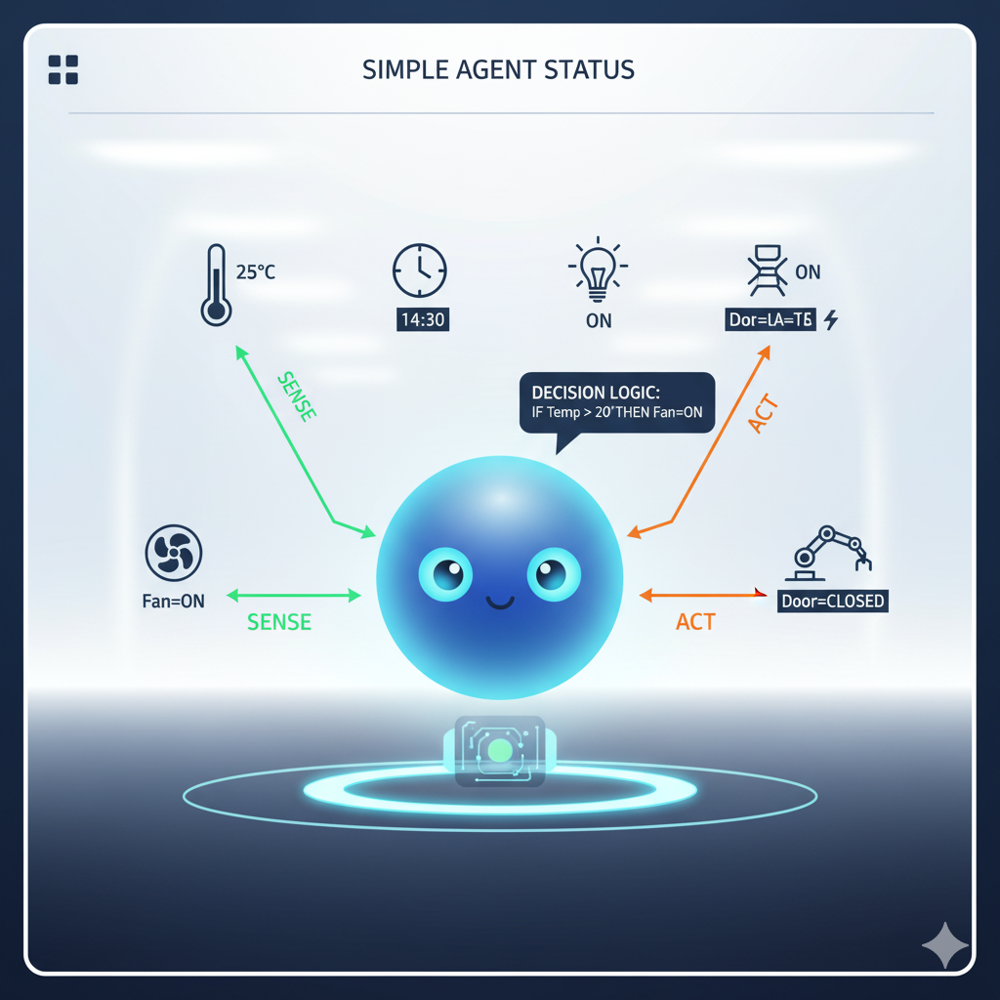
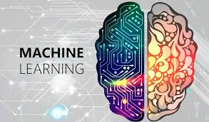
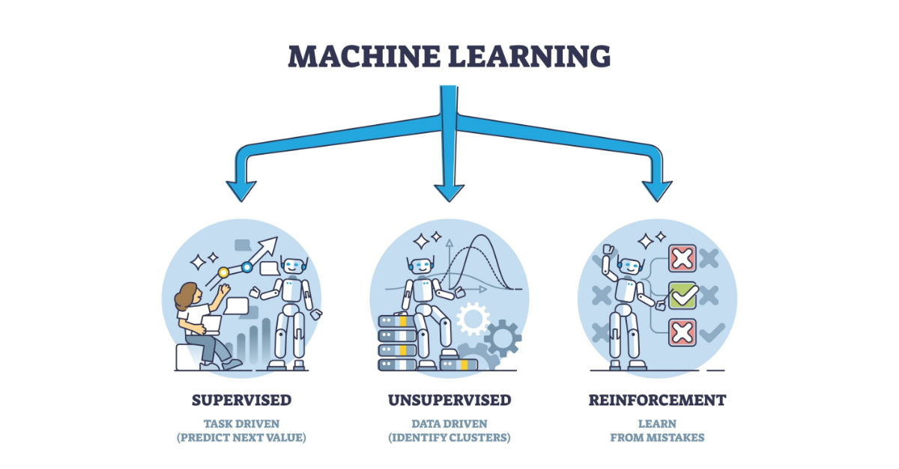
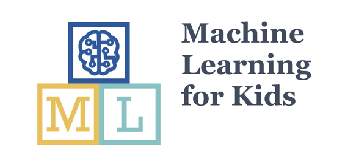

¡Descubre el Poder de la Inteligencia Artificial!
¿Has hablado alguna vez con un asistente de voz como Siri o Google Assistant? ¿O has visto cómo Netflix te recomienda películas que te encantan? Todo esto es posible gracias a la Inteligencia Artificial (IA).
La IA es una de las tecnologías más emocionantes de nuestro tiempo, y está en todas partes, desde los videojuegos hasta los coches que se conducen solos. En esta unidad, vamos a explorar qué es la IA, cómo funciona y por qué es tan importante para nuestro futuro.
- - La IA está transformando el mundo.
1. ¿Qué es la Inteligencia Artificial?
La Inteligencia Artificial (IA) es la capacidad de las máquinas para imitar la inteligencia humana. Esto significa que un programa de IA puede hacer cosas que normalmente requieren pensamiento humano, como:
- Aprender: Mejorar con la experiencia.
- Razonar: Resolver problemas y tomar decisiones.
- Comprender el lenguaje: Entender lo que decimos o escribimos.
- Reconocer patrones: Identificar caras, objetos o voces.
En resumen, la IA permite que las máquinas "piensen" y actúen de forma inteligente para realizar tareas.
Ejemplos de IA en tu día a día:
- Asistentes de voz: Siri, Google Assistant, Alexa.
- Recomendaciones: Netflix, YouTube, Spotify.
- Filtros de spam: En tu correo electrónico.
- Reconocimiento facial: Para desbloquear tu móvil.
- Videojuegos: Los personajes controlados por la máquina.
- - La IA está por todas partes.
¡Actividad Práctica! Piensa en 3 ejemplos de IA que uses o conozcas en tu vida diaria y compártelos con tus compañeros.
2. Ética y Responsabilidad Social en el uso de la IA
La IA es muy poderosa, y como todo poder, debe usarse con responsabilidad. Es importante pensar en las consecuencias de cómo usamos la IA.
Preguntas importantes sobre la ética en IA:
- ¿Es justa la IA? ¿Toma decisiones sin prejuicios? Por ejemplo, un sistema de IA que decide quién consigue un trabajo, ¿es justo para todos?
- ¿Es segura la IA? ¿Puede causar daño si falla o se usa mal?
- ¿Respeta nuestra privacidad? ¿Qué datos nuestros usa y cómo los protege?
- ¿Quién es responsable si algo sale mal? Si un coche autónomo tiene un accidente, ¿quién tiene la culpa?
Debemos asegurarnos de que la IA se desarrolle y se use para el bien de la sociedad, respetando a las personas y sus derechos.
- - La IA debe ser justa y segura.
¡Actividad Práctica! En grupos, debatan un ejemplo de IA (como un sistema de reconocimiento facial en la calle) y piensen en un posible problema ético que podría surgir y cómo lo solucionarían.
3. Agentes Inteligentes Simples: Pequeños Cerebros Digitales
Un agente inteligente es cualquier cosa (un programa, un robot) que puede percibir su entorno (recibir información), procesar esa información y luego actuar para alcanzar un objetivo.
Piensa en el personaje de un videojuego que te persigue:
- Percibe: Ve dónde estás tú.
- Procesa: Decide la mejor ruta para alcanzarte.
- Actúa: Se mueve hacia ti.
Estos son ejemplos de agentes inteligentes simples, programados para seguir reglas específicas.

- - Así funciona un agente inteligente.
¡Actividad Práctica! En Scratch, programa un "sprite" para que persiga al puntero del ratón. Esto es un agente inteligente simple que percibe la posición del ratón y actúa moviéndose hacia él.
4. Aprendizaje Automático (Machine Learning): La IA que Aprende
El Aprendizaje Automático (Machine Learning - ML) es una parte muy importante de la IA. Es la capacidad de los ordenadores para aprender de los datos sin ser programados explícitamente para cada tarea.
Imagina que quieres que un ordenador reconozca si una foto es de un perro o un gato. En lugar de decirle "si tiene orejas puntiagudas y bigotes largos es un gato", le muestras miles de fotos de perros y gatos. El ordenador, por sí mismo, aprende a diferenciar entre ellos.
El ML se usa en las recomendaciones de Netflix, en el reconocimiento de voz de tu móvil y en los filtros de spam.

- - La IA aprende de los datos.
¡Actividad Práctica! Piensa en un juego donde la dificultad se adapte a cómo juegas. ¿Cómo crees que la IA del juego podría "aprender" de tus movimientos para hacerse más difícil o más fácil?
5. Tipos de Aprendizaje Automático
Hay varias formas en que las máquinas pueden aprender. Aquí veremos las más básicas:
- Aprendizaje Supervisado:
Es como aprender con un profesor. Le das a la máquina muchos ejemplos con sus respuestas correctas, y la máquina aprende a dar esas respuestas.
Ejemplo: Mostrarle fotos de perros y decirle "esto es un perro", "esto es un gato". - Aprendizaje No Supervisado:
Es como descubrir cosas por ti mismo. Le das a la máquina datos sin respuestas correctas, y la máquina busca patrones o grupos por sí misma.
Ejemplo: Agrupar a clientes con gustos similares sin que tú le digas cuáles son esos gustos. - Aprendizaje por Refuerzo:
Es como aprender jugando a un videojuego. La máquina aprende por "prueba y error", recibiendo "recompensas" por las acciones correctas y "castigos" por las incorrectas.
Ejemplo: Un robot aprendiendo a caminar, donde cada paso exitoso es una recompensa.

- - Diferentes formas en que la IA puede aprender.
¡Actividad Práctica! Piensa en un ejemplo de la vida real para cada tipo de aprendizaje (supervisado, no supervisado, por refuerzo) que no hayamos mencionado.
6. Machine Learning for Kids: ¡Crea tu propia IA!
Para entender de verdad cómo funciona el Aprendizaje Automático, ¡nada mejor que crearlo tú mismo! Machine Learning for Kids es una herramienta fantástica que te permite entrenar a una IA con tus propios datos y luego usarla en proyectos de Scratch o App Inventor.
Es como enseñar a un robot a reconocer cosas. Tú le das ejemplos (imágenes, textos, números) y le dices qué son. El robot "aprende" y luego puede reconocer cosas nuevas por sí mismo.

- - ¡Entrena a tu propia IA!
¡Explora la herramienta! Puedes acceder a Machine Learning for Kids aquí: Machine Learning for Kids
Actividad de Evaluación: "Clasificador de Texto de Mensajes"
Utilizando Machine Learning for Kids, vas a crear un proyecto de IA que pueda clasificar mensajes de texto como "positivo", "negativo" o "neutro".
- Paso 1: Entrenar la IA.
- Crea un nuevo proyecto de "reconocimiento de texto" en Machine Learning for Kids.
- Crea tres "etiquetas" (categorías): `positivo`, `negativo`, `neutro`.
- Añade al menos 10 ejemplos de frases para cada categoría. Por ejemplo:
- Positivo: "Me encanta este juego", "Hoy es un día genial", "Qué bien me lo paso"
- Negativo: "Estoy aburrido", "Esto es muy difícil", "No me gusta"
- Neutro: "Hola", "Qué hora es", "Voy a clase"
- Entrena tu modelo de aprendizaje automático.
- Paso 2: Usar la IA en Scratch.
- Abre el editor de Scratch y conecta tu proyecto de Machine Learning for Kids.
- Crea un programa donde el usuario escriba un mensaje (usando el bloque "preguntar y esperar").
- La IA debe clasificar el mensaje y el personaje de Scratch debe decir si el mensaje es "positivo", "negativo" o "neutro".
- Si el mensaje es "negativo", el personaje podría cambiar a un disfraz triste; si es "positivo", a uno alegre.
- Paso 3: Reflexión y Presentación.
- Explica cómo entrenaste tu IA (qué ejemplos usaste).
- Demuestra cómo funciona tu proyecto de Scratch, probando diferentes mensajes.
- Discute si la IA siempre clasifica correctamente y por qué (introducción a la ética y limitaciones).
Criterios trabajados:
- 4.2. Comprender los principios básicos de funcionamiento de los agentes inteligentes y de las técnicas de aprendizaje automático, con objeto de aplicarlos para la resolución de situaciones mediante la Inteligencia Artificial de forma ética y responsable.
Cuestionario: ¡Demuestra lo que sabes de IA!
Responde a las siguientes preguntas para comprobar lo que has aprendido en esta unidad.